Capa

Prefácio
Diz a sabedoria popular que um homem só tem uma vida completa quando planta uma árvore, escreve um livro e tem um filho. Ao meu ver, não se diz isso pensando de forma literal, mas sim na importância abstrata destes feitos. Ao plantar uma árvore, demonstramos preocupação com o ambiente onde vivemos. Ao ter um filho, amamos ao próximo incondicionalmente. Ao escrever um livro, desejamos compartilhar e "eternizar" o conhecimento adquirido. Claramente conseguimos realizar estes feitos abstratos de diferentes maneiras. O importante é ter consciência da importância destes.
Li recentemente um livro do prof. Mario Sergio Cortella ("Pensar bem nos faz bem!") onde ele diz que o livro foi a primeira plataforma de EAD (Ensino à Distância) criada. Achei fantástica a observação! Sou professor universitário apaixonado há anos e também colaboro em cursos a distância, onde buscamos levar conhecimento para muito além de onde podemos imaginar. Um livro, de fato, tem esse poder.
Os escritores também me despertam igual fascínio. Aos olhos ingênuos de alguém que nunca escreveu um livro, estes parecem esgotar os assuntos que abordam. Para tal, seriam necessários anos de intensa dedicação, experiência e muito conhecimento. Como os conhecimentos sobre qualquer área crescem vertiginosamente com o passar do tempo, um livro poderia ter um tamanho imenso. Na verdade, tomei coragem para escrever este livro quando percebi que o que tinha para compartilhar, por mais que não fosse completo, esgotado, valia muito ser divulgado.
Durante minhas aulas, em diferentes assuntos dentro da Computação, costumo usar e abusar de analogias. Entendo que analogias são uma ferramenta ímpar no processo de aprendizado, pois usamos cenários, situações que são do cotidiano do aprendiz, para introdução de novos conceitos. Num evento internacional que estive em 2012, conheci a professora Mary Lynn Manns, a qual me deu de presente, após frequentar um curso ministrado por ela, um livro de sua co-autoria chamado Pedagogical Patterns. Este livro possui uma coletânea de padrões pedagógicos fornecidos por diferentes professores mundo a fora. Apesar de nunca ter pensado a respeito, ou seja, se havia alguma teoria por trás, as tais analogias (Consistent Metaphor) são um padrão apresentado no livro, o que me deixou bastante feliz, uma vez que pratico o padrão de maneira instintiva, sem nenhum embasamento teórico.
Este livro é um exemplo do uso de analogias no ensino de programação. Para tal, utilizamos o contexto da culinária. Não é intenção minha ensinar pessoas da área de computação a cozinhar, nem cozinheiros a arte da programação. Também não é a intenção unir estas duas áreas como na linguagem esotérica Chef. O objetivo principal é tentar detalhar uma frase que professores de programação costumam dizer para iniciantes de forma recorrente: "Programar é como escrever/preparar uma receita de bolo". Ou seja, objetivamos facilitar o ensino/aprendizado da programação. Encontramos iniciativas similares, mas num escopo bem mais restrito. São elas: (i) Vídeo da professora Tanzeela Ali, da Universidade Superior do Paquistão entitulado "From Psychology to Logic - Learning Computer Programming in the Kitchen"; (ii) Thread no Reddit com título "Why programmers like cooking" que discute o gosto de programadores pelo ato de cozinhar; (iii) Outra thread, esta no Hacker News da YCombinator, com a mesma temática "Hackers who cook"; (iv) Site com analogias gerais para compreender desenvolvimento web "Code Analogies"; (v) Vídeo dos youtubers Gabriel Froes e Vanessa Weber com o mesmo título deste livro "Programando na Cozinha", os quais abordam a relação entre o ato de cozinhar e programar. Apesar do último vídeo em si não fazer nenhuma analogia direta, no site indicado há um link para um código em PHP (linguagem para criação de páginas web, como o do site deste livro) que codifica a receita do vídeo, ou seja, uma analogia literal, na prática.
Ufa, quanto detalhe técnico, não !? Quantos termos novos! Bem, nosso intuito é tentar desmistificar tudo isso. Em nosso livro, o programador que queremos formar é um chefe de cozinha, que conhece receitas tanto tradicionais quanto complexas, a ponto de até poder criar suas próprias receitas. Bon appétit! Ou melhor, boa programação!
Quem Deve Ler
Este livro foi inicialmente pensado para pessoas que estejam querendo iniciar ou se familiarizar com conceitos de programação. Além destes, o livro também é útil para professores de programação que estejam procurando dicas para tornar suas explicações mais intuitivas. Nesta seção descrevo quais partes do livro são interessantes para qual público alvo.
Prefácio: para todos. Leitura obrigatória para entender as motivações e inspirações do autor. Tanto que coloquei antes deste capítulo no índice!
Introdução: para leigos em Informática.
Conceitos básicos: para leigos que desejam ganhar afinidade com programação.
Conceitos avançados: para pessoas iniciadas em programação que desejam ganhar afinidade com conceitos mais avançados de programação.
O desejo do autor é que todos leiam tudo :). Mas preciso ser honesto e não frustrá-los. Entretanto, se não entender alguma analogia, esta é uma ótima oportunidade de dar um feedback para o autor! ;)
Introdução
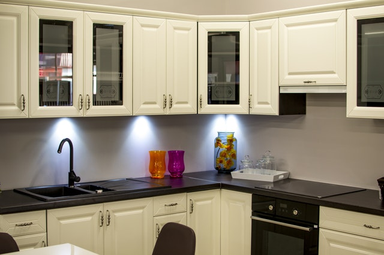
Neste livro apresentaremos conceitos de programação fazendo analogia com a culinária. Para tal não é necessário ser um "mestre cuca" para entender as analogias apresentadas. Utilizamos este artifício como forma de facilitar o entendimento de conceitos na programação. Os conceitos abordados vão desde a programação básica, para iniciantes, até conceitos mais avançados, exigidos a programadores experientes.
Antes de falarmos de programação efetivamente, vamos apresentar de maneira minimalista, mas suficiente, o que é um computador. Na verdade, o esquema abaixo descreve de maneira geral todos os sistemas computacionais que temos contato: celulares, tablets, robôs, forno microondas, etc.
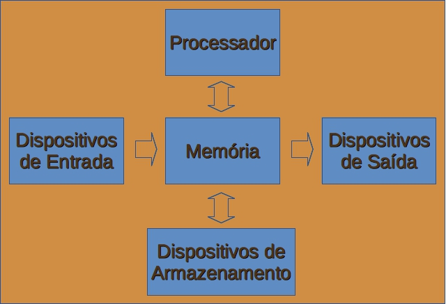
Neste esquema, o Processador é o cérebro do sistema, o qual controla todo o seu funcionamento. Apesar de muito poderoso e rápido, só nada conseguiria fazer. Para ajudar na sua tarefa temos os outros 4 componentes do diagrama: a Memória, os dispositivos de Entrada, Saída e Armazenamento.
A Memória, também chamada de memória principal ou memória RAM, é o componente responsável pelo armazenamento rápido de informações. O nosso cérebro também possui uma porção para este fim. Quando precisamos guardar um número de telefone "de cabeça", por não posssuirmos no momento nada para registrá-lo, usamos essa porção do cérebro. Conseguimos registrar muito rapidamente, mas conseguimos esquecer com igual velocidade também. Nos computadores, a informação é retida na memória enquanto este está ligado, se esvaziando quando o desligamos. Processo similar deve ocorrer com nosso cérebro quando vamos dormir, ao menos para as informações que foram obtidas sem muito esforço.
Na situação em que queremos registrar a informação de forma mais duradoura, usamos a memória secundária, os Dispositivos de Armazenamento. Da mesma forma que temos muitas alternativas para registrar um número de telefone de forma mais permanente (caderno de anotações, agenda do celular, papel de pão, etc), o processador tem diversos dispositivos para registrar suas informações: disco rígido, cartão de memória, CD-Rom, etc. O registro nestes dispositivos garante um tempo de vida útil muito maior que a memória principal.
Outro aspecto fundamental para que nosso cérebro funcione é o contexto onde ele se encontra. Problemas enfrentados no dia a dia são fundamentais para manter nosso cérebro em funcionamento. E estes problemas são percebidos com nossos sentidos: visão, olfato, paladar, audição e tato. Estes sentidos permitem que nos comuniquemos com o mundo, assim como os Dispositivos de Entrada (teclado, mouse, microfone, etc) e os Dispositivos de Saída (monitor, impressora, etc) permitem que possamos interagir com os computadores. Alguns sentidos possuem uma única direção, como a visão e a audição. Estes são utilizados apenas para fornecer informação (entrada) ao cérebro. O tato, por sua vez, tem o papel de nos dar a percepção do formato, a textura das coisas (entrada), mas também permite que troquemos as coisas de lugar (saída). Com o computador não é diferente. Um teclado é usualmente utilizado como um dispositivo de entrada. Um monitor, por sua vez, pode ter a tela sensível ao toque, o que o torna um dispositivo de entrada e saída. Apesar disso, os papéis de entrada e saída são bem definidos, como pode ser visto no sentido das setas do esquema anterior.
A seguir veremos analogias básicas destes componentes em nossa cozinha.
Computador
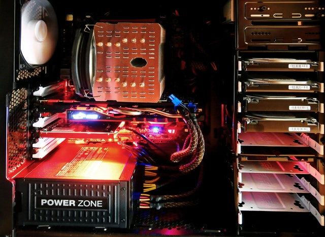
Uma cozinha pode ser associada a um computador. É nela em que tudo acontece. Um computador executa programas, assim como uma cozinha é utilizada para preparar receitas. O computador é operado por um usuário, o qual tem necessidades específicas e utiliza o computador para automatizá-las. Da mesma forma as receitas só são preparadas quando há clientes famintos demandando estas.
Memória Principal
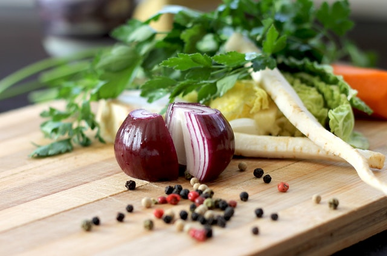
Quando dizemos que utilizamos uma cozinha (e não um quarto), já subentendemos que uma série de elementos comuns de uma cozinha estarão disponíveis. A cada destes elementos fazemos uma associação a componentes num computador. Pias e bancadas constituem a memória principal, pois elementos são armazenados ali de forma temporária, apenas para o preparo de uma receita. Ingredientes, vasilhames, até a descrição da receita em si, são colocados nesta memória para auxiliar o preparo da receita.
Na cozinha é recomendável que sempre deixemos a bancada limpa. Isso agiliza o preparo de novas receitas, além de garantir higiene na manipulação dos alimentos. Essa limpeza é importante também pois o espaço disponível na bancada é limitado. Todas essas características valem para o uso da memória num computador. Ela precisa ser desocupada com frequência, usada de forma consciente, para que não se esgote rapidamente.
No preparo de receitas que envolvem muitos ingredientes, ou no preparo de mais de uma receita simultaneamente, é comum a bancada não ser suficiente. Neste caso, costumamos manter alguns ingredientes no armário, se possível próximo da bancada para não atrasar no preparo na receita. Este espaço reservado nos armários para o preparo de uma receita, em função da bancada estar cheia, é chamado de memória virtual no computador. Ou seja, quando grandes programas executam no computador, em uma memória limitada, eventualmente é necessário que parte destes programas sejam colocados nos discos rígidos para que outras partes possam ser executadas.
Memória Secundária
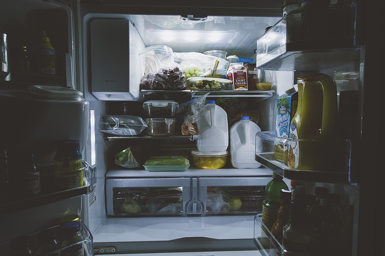
Para que diversas receitas possam ser preparadas, é necessário que uma cozinha esteja bem equipada para permitir o armazenamento adequado de produtos e utensílios domésticos. Para tal utilizamos armários, geladeiras e freezers, os quais representam nossa memória secundária, ou seja, dispositivos que armazenam nossos produtos com muito mais espaço e por um tempo muito maior que nossas pias e bancadas.
Processador
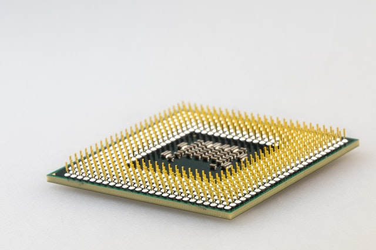
Para que o preparo da receita possa de fato ocorrer, fogões, fornos e microondas costumam ser peças fundamentais, para onde vão todo nosso esforço na cozinha. Esses elementos, na Computação, são os processadores. Como na cozinha, há muitos tipos, os quais podem diferir pela velocidade de processamento, consumo de energia, material utilizado, etc. Estas e outras características, juntamente com a competição de mercado, determinam os preços desses componentes.
Arquitetura
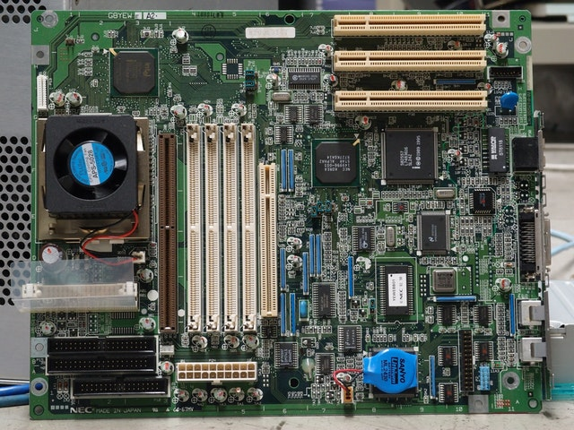
Um arquiteto na construção civil tem como uma de suas atribuições garantir a melhor distribuição dos espaços numa cozinha. Esta distribuição deve garantir buscar a maior eficiência possível. Por exemplo, uma bancada sempre está próxima de uma pia, pois é comum na cozinha a tarefa de descascar e lavar, por exemplo. Ou seja, a distribuição otimiza as tarefas mais frequentes. De forma igual ocorre na Computação, onde um arquiteto de hardware projeta a máquina de forma que seus componentes funcionem da forma mais eficiente possível. Por exemplo, no uso do fogão, durante um preparo, os ingredientes podem ser necessários em momentos distintos, e um retardo ao pegar um ingrediente pode resultar num prato com cozimento fora do ideal, por exemplo. Relação similar ocorre entre processador e memória num computador.
Programador
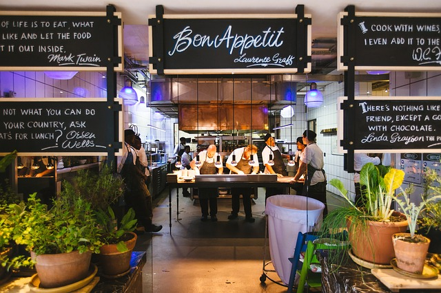
As receitas são elaboradas por chefes de cozinha e preparadas por cozinheiros. A elaboração destas é feita baseada na experiência do chefe com diferentes ingredientes, que combinados darão o efeito desejado. Tendo em vista que ingredientes similares podem causar o mesmo efeito, como manteiga e azeite, um mesmo prato pode ser preparado de diferentes formas. De forma similar ocorre na programação, onde programas diferentes podem ter o mesmo resultado. Os chefes são os programadores que elaboram receitas de acordo com o pedido de seus clientes.
Os cozinheiros, por sua vez, tem a tarefa metódica de executar o que está descrito na receita. Essa execução é feita passo a passo, na mesma ordem listada na receita. É comum que cozinheiros improvisem, alterem a receita durante o preparo, seja pela falta de algum ingrediente, seja com o intuito de dar um toque pessoal à receita. Na Computação, o papel do cozinheiro é exercido pelo interpretador de uma linguagem, ou seja, o programa que os cozinheiros executam para interpretar as receitas. A única diferença é que não há toque pessoal na Computação, ou seja, o interpretador só executa aquilo que está descrito, nada mais, nada menos. No máximo, pode ocorrer a falta de algum ingrediente. Mesmo nesta situação, é necessário que o interpretador já saiba de antemão qual caminho alternativo seguir. Se pensarmos bem, com o cozinheiro acontece a mesma coisa, pois ele precisa ter vivido aquela situação de falta de algum ingrediente para conhecer seus possíveis substitutos.
Sistema Operacional
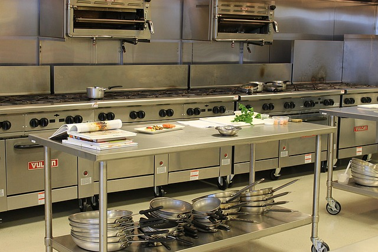
Pensando numa cozinha industrial, onde a quantidade de pratos a serem preparados simultaneamente é grande, é fundamental que haja um pessoal de apoio para garantir o bom funcionamento da cozinha. Chamaremos estes de assistentes do cozinheiro, os quais localizam os ingredientes e utensílios nos armários e geladeiras, arrumam estes quando há necessidade, arrumam também a bancada, lavam a louça que já foi utilizada e que poderá ser reutilizada, controlam a temperatura do fogo, ou seja, dão todo o apoio para que as receitas possam ser preparadas da melhor forma possível. Na Computação estes são chamados de Sistemas Operacionais. A forma como estes funcionam varia de fabricante para fabricante, assim como as cozinhas possuem organizações bem particulares. Observem que iniciamos este parágrafo considerando cozinhas industriais. Mas, tendo em vista os papéis cruciais desempenhados pelos assistentes, não é de se estranhar que toda cozinha tenha alguém com este papel. Da mesma forma, encontramos Sistemas Operacionais tanto em grandes centros computacionais como em computadores domésticos, tablets, celulares e qualquer outro equipamento que execute diferentes programas.
Dispositivos de Entrada e Saída
Para que as cozinhas funcionem é fundamental que hajam alimentos. Estes alimentos são entregues por fornecedores, os quais podem ser encarados como os dispositivos de entrada de nosso computador. Da mesma forma, podemos encarar a forma de entrega de nossos preparos (entrega a domicílio, no restaurante, etc) como os dispositivos de saída.
Abaixo segue um resumo das analogias de base para este livro:
| Culinária | Programação |
|---|---|
| Cozinha | Computador |
| Receita | Programa |
| Chefe | Programador |
| Cozinheiro | Interpretador |
| Assistentes de Cozinheiro | SO |
| Pia/Bancada | Memória Principal |
| Armários/Geladeira | Memória Secundária |
| Cliente | Usuário |
| Fornecedores | Dispositivos de Entrada |
| Formas de Entrega | Dispositivos de Saída |
| Receitas de: Entrada + Prato Principal + Sobremesa | Sistema |
| Material para criar receitas | IDE |
Agora que introduzimos as analogias básicas e gerais entre Computação e Culinária, podemos iniciar a apresentação das analogias entre receitas e programas, as quais são o objetivo principal deste livro.
Mas antes, um teste para verificar se captou a essência dessas analogias:
Conceitos Básicos
Neste capítulo apresentamos analogias de conceitos básicos para os iniciantes em Programação. Todas as analogias levam em consideração as analogias básicas apresentadas no capítulo de Introdução.
Entrada/Saída
Analogia:
Entrada: Pedido
Saída: Prato elaborado
Comandos de entrada e saída são fundamentais por permitirem a criação de programas interativos. No nosso dia à dia, essa interação é crucial para que consigamos utilizar bem máquinas programadas. Não há como se pensar, por exemplo, num caixa automático bancário que não tenha tela e teclas para enviarmos comandos a serem processados, ou a impressora que emite o resultado do extrato solicitado. Na cozinha de um restaurante, um pedido, juntamente com os ingredientes necessários para o seu preparo, são considerados os dados de entrada. O prato resultante do pedido, juntamente com adereços como bandejas, arranjos e outros artifícios para embelezar o prato, representam a saída. Apesar da parte fundamental deste processo ser o preparo, assim como o execução de programas num computador, a entrada e saída são fundamentais para que o preparo e a execução sejam utilizadas.
Identificadores
Analogia:
Identificadores: Utensílios específicos
Na programação, a tudo podem ser dados nomes, os quais são fundamentais para se identificar e referenciar recursos num programa. Na cozinha, quando nos referimos a tamanhos de potes diferentes (pequeno, médio e grande), indiretamente estamos identificando estes potes. Se tivermos muitos potes, é provável que queiramos atribuir nomes mais únicos, de forma a distingui-los bem. Seria como se todos os utensílios tivessem nomes: uma panela chamada "velhinha" com capacidade de 2 litros, um tabuleiro chamado "de sempre" com dimensões 50x20x5, etc. Na programação, há restrições quanto ao formato e os possíveis valores de identificadores. Usualmente estes são palavras cujo significado costuma se referir ao valor que este representa. Isso é fundamental para que não haja confusão na interpretação. Por exemplo, na nossa cozinha, imagine que chamemos uma frigideira de "abóbora". Se dizemos, "coloque o recheio preparado na abóbora", necessariamente nos confundiríamos no preparo desta receita. O mesmo vale para os computadores em relação a programas. Ou seja, apesar dos identificadores servirem apenas de auxílio para nos referirmos a utensílios, seja numa receita ou num programa, a definição e uso adequado são cruciais para não gerarmos confusão e comprometermos a sua utilização.
Atribuição
A atribuição na programação ocorre quando uma variável recebe o conteúdo existente em outra variável. Na cozinha isto ocorre quando colocamos o conteúdo de um recipiente em outro. Apesar da analogia aparentemente ser perfeita, há uma diferença que não é desprezível: na programação, quando atribuímos, fazemos uma cópia do conteúdo de uma variável para outra; na culinária, quando um recipiente recebe o conteúdo de outro, este último fica vazio. Essa cópia tem custo irrelevante se comparado ao custo de se duplicar um preparo na cozinha.
Exemplo na cozinha:
vasilhame <- farinha, leite, ovos, açúcar
mistura (vasilhame)
tabuleiro <- vasilhame
No exemplo acima, tanto na linha 1 quanto na linha 3 temos atribuições acontecendo.
Baseado numa sugestão de um aluno, supondo que o conteúdo de um recipiente seja muito quente ou muito frio, o ato de despejá-lo em outro recipiente faz com que este novo recipiente tenha a mesma temperatura do recipiente que continha o conteúdo (desprezando algumas propriedades físicas de trocas de calor). Ou seja, a temperatura é uma característica compatilhada entre vasilhames, assim como a atribuição de variáveis na Programação.
Estruturas de controle
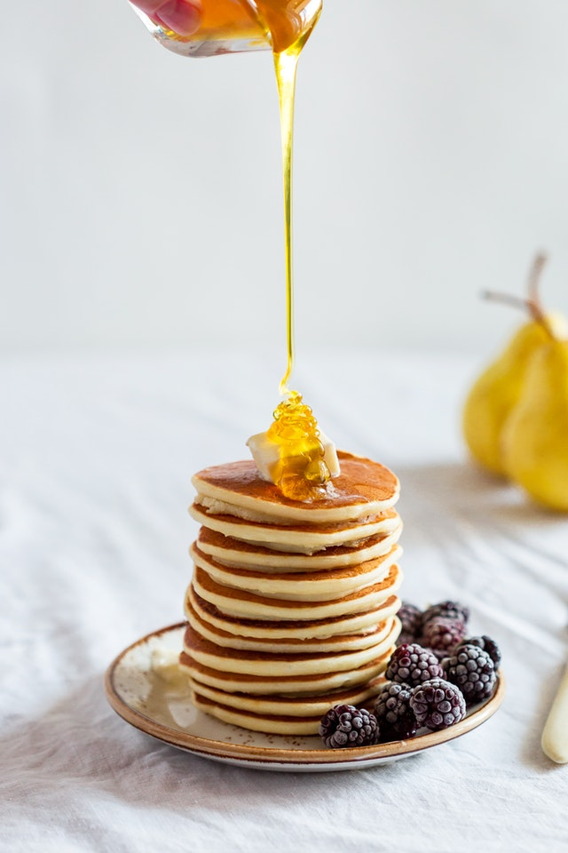
São operações utilizadas para se alterar o fluxo de operações sequencial padrão, onde um comando é executado após o outro. As estruturas de controle criam fluxos alternativos, os quais podem ser seguidos em função dos valores de variáveis. Na cozinha, estas operações são usadas frequentemente para se verificar o cozimento de alimentos, consistência das massas num preparo (ponto), tempo de assado, dentre outros.
Exemplo na cozinha:
Misturar ate que se forme uma calda
ou
Enquanto consistencia liquida
Misturar
Neste exemplo, a operação de mistura ocorre até que uma situação ocorra. Neste caso, a situação é o líquido passar a ter uma consistência em calda.
Estruturas de dados
Organizadores podem ser utilizados por toda a cozinha e ajudam na organização de ingredientes, utensílios e qualquer outro conjunto de elementos que precisem ser armazenados e recuperados com alguma frequencia. Esta utilidade também é desejável na manipulacão de valores na programação. Esta facilidade é obtida com o uso de estruturas de dados, que podem ocorrer tanto em memória (bancada de uma cozinha) quanto em arquivos (dispensa de uma cozinha). A quantidade de compartimentos, a capacidade de cada um, a forma como os utensílios são dispostos, dentre outros aspectos, são características que diferem estas estruturas e devem ser definidas por quem irá utilizá-las de forma a facilitar a colocação, localização e retirada dos utensílios. Como exemplo de estruturas de dados em memória temos listas, pilhas, coleções em geral, enquanto que em memória secundária temos arquivos binários em geral como arquivos de índices em bancos de dados.
Vetores
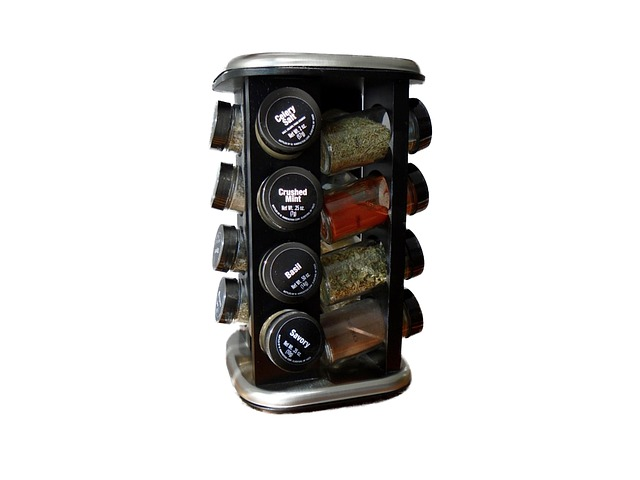
Porta temperos são utilizados para guardar diferentes tipos de temperos juntos e de forma organizada. Esta organização facilita o armazenamento e o uso quando se precisa destes para algum preparo. Para identificá-los de maneira precisa, usualmente cada recipiente do porta temperos possui um espaço para colocarmos o nome do tempero. Na Computação um porta temperos é uma coleção, ou seja, uma estrutura que armazena diferentes valores. O nome que identifica um tempero é um índice. Além de nomes, podemos utilizar números para esta identificação. Apesar de menos explícitos se comparados com nomes, números podem ser úteis quando o recipiente é pequeno para o tamanho do nome do tempero. Coleções indexadas por números são chamadas de vetores na programação.
Registros
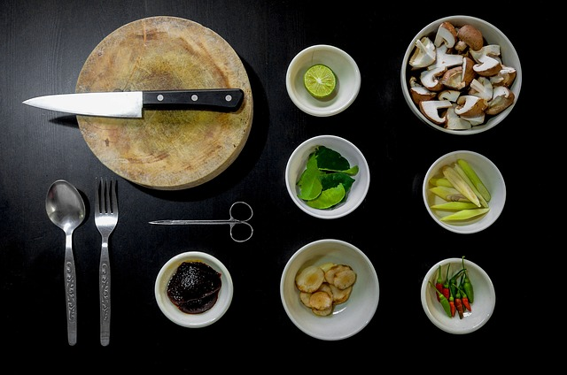
Usualmente, cozinheiros experientes recomendam que ingredientes relacionados, os quais são usados juntos com frequência, sejam armazenados também proximamente. Isso faz com que os cozinheiros percam menos tempo no preparo de um prato, pois poderão pegar os ingredientes juntos. Os registros são utensílios encaixáveis, modernos, os quais permitem que juntemos ingredientes de diferentes tipos, como ovos, leite e farinha.
Conversão de Tipos - Casting
Propriedade que permite que um valor de um tipo (ingrediente) seja "convertido" em outro. Por exemplo, quando um número real é atribuído a um inteiro, apenas a parte inteira é armazenada neste último. Analogamente, quando lavamos o arroz, um vasilhame contém a água e o arroz. Quando usamos uma peneira para secá-lo, o novo vasilhame conterá apenas o arroz. Há diversas outras situações onde ocorre um casting na cozinha: alimentos antes e após serem descascados, a criação de cubos de arroz após este ser preparado, os enfeites feitos com frutas, verduras e legumes para embelezar pratos e mesas, dentre outros. Observem que em todas as situações o ingrediente que está sendo manipulado é praticamente o mesmo, foi apenas modificado para atender a um fim específico.
Exemplo na cozinha:
vasilhame <- farinha peneirada
canecão <- suco de maracujá cuado
Nos exemplos acima, o ato de peneirar a farinha ou cuar um suco não modificam os alimentos por completo, mas alteram estes de maneira que fiquem mais adequados para algum uso.
Coleções
Coleções são sacolas, sacos com lacre ou qualquer outro recipiente utilizado para armazenar vários ingredientes, os quais podem ser de tipos diferentes. Esse armazenamento pode ser temporário, apenas durante o preparo de uma receita, ou por um longo tempo, para durar por várias receitas. Neste último caso, estes são colocados em armários e geladeiras (hds) ou freezers (hds externos). Dada a natureza dos ingredientes, eventualmente pode ser necessário que estes sejam armazenados segundo alguma ordem. Por exemplo, se estes possuem data de validade, é fundamental que os mais antigos sejam os primeiros a serem recuperados.
Subrotinas
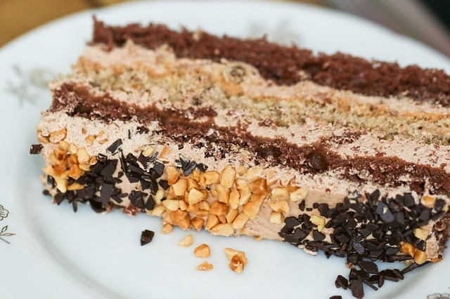
No preparo de receitas que tomam muitos passos, é comum que partes da receita sejam preparadas em separado, seja por utilizarem um conjunto de ingredientes diferentes, seja por necessitarem de preparo em momentos distintos para depois serem combinados num único prato. Na preparação de um bolo, por exemplo, é comum prepararmos o recheio e a cobertura separados do preparo da massa do bolo. Ou seja, os preparos do recheio e da cobertura são como "subreceitas", assim como funções e procedimentos num programa também são chamados de subprogramas. A utilização de subprogramas e subreceitas em programas e receitas, respectivamente, também é interessante do ponto de vista da organização, uma vez conseguimos particionar nossa tarefa maior em tarefas menores. Outro ponto a observar é a possibilidade de reutilizarmos partes de uma receita em outra, como uma cobertura de bolo de chocolate em um pudim.
Parâmetros / Argumentos
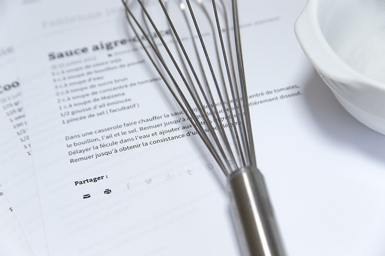
Toda receita listada num livro de receitas possui uma porção resultante, a qual indica para quantas pessoas este preparo atenderá. Esta quantidade sempre está ligada à quantidade de ingredientes utilizados, os quais são informados e usualmente podem ser alterados de forma proporcional. Por exemplo, se uma receita leva 1 litro de leite, 2 ovos, 500gr. de farinha e serve 4 pessoas, geralmente podemos prepará-la para 2 pessoas fornecendo metade dos ingredientes. Os ingredientes, neste caso, são chamados de parâmetros e/ou argumentos1 na programação. Todas as receitas possuem esta característica, ou seja, podemos dizer que todas as receitas são parametrizadas. Essa característica existe tanto para uma receita como um todo quanto para partes de preparo internas a uma receita (subreceita).
Diferenciando tecnicamente, argumentos são os valores a serem passados para uma função, enquanto que parâmetros são os nomes das variáveis nas funções que receberão os valores passados.
Recursão
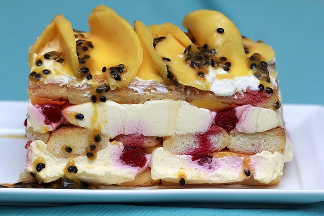
Considere o preparo de uma gelatina. Esta seguirá uma sequência de passos como qualquer outra receita. Se imaginarmos um bolo que tem uma camada de sorvete ou massa (farinha) e outra de gelatina, cada destas camadas pode ser tratada por uma rotina separada. A combinação da chamada destas rotinas é o preparo do bolo desejado.
Agora considere que queiramos preparar um bolo de camadas coloridas de gelatina. Se nunca preparou uma gelatina, saiba que esta é preparada com água quente, que depois de uma mistura vai para a geladeira para endurecer. Como queremos várias camadas coloridas, teremos que preparar uma camada por vez, de forma a evitar que as camadas se misturem. Empilhamos cada novo preparo sobre as camadas já feitas, as quais devem estar prontas (endurecidas). Preparamos novas camadas até uma situação limite (situação de parada), como o limite da forma disponível. Recursão na Computação é exatamente esse processo de uma mesma rotina ser chamada em sequência até que uma condição seja satisfeita.
Abaixo apresento a estrutura típica de uma função recursiva usando nossa analogia:
1. **prepara_gelatina** (num_camadas)
2. Se (num_camadas == 0) // Forma cheia
3. Termina preparo
4. Mistura pó de qualquer sabor com água quente
5. Despeje na forma
6. Leve a geladeira para endurecer
7. **prepara_gelatina** (num_camadas - 1)
No exemplo acima, a função prepara_gelatina inicia na linha 1 possui como parâmetro o número de camadas num_camadas. Na linha 2 há um teste, chamado caso base, o qual verifica se ainda há algo para fazer. Neste caso, se a forma já foi preenchida até seu limite. Caso o limite tenha sido alcançado, a função é terminada na linha 3 e nenhuma das linhas seguintes é realizada.
Caso a forma ainda não esteja preenchida, continuamos o preparo a partir da linha 4 em diante. O ponto chave da receita acima está na linha 7, onde uma camada acabou de ser preparada e uma nova precisa ser feita. Como os passos a serem dados são idênticos aos anteriores, é importante não sermos repetitivos e duplicarmos os preparos realizados da linha 2 até a 6. Para evitar esta repetição, chamamos a função novamente na linha 7, nos preocupando em atualizar o parâmetro, neste caso, diminuindo a quantidade de camadas que ainda faltam ser preparadas.
Resumindo, podemos descrever o problema de preparar num_camadas recursivamente como sendo o preparo de 1 camada + o preparo das num_camadas - 1 restantes, onde está última parte é a chamada recursiva. Observe que nossa gelatina pode ter 1, 5 ou 50 camadas, a função é a mesma.
Bibliotecas
No preparo de uma receita, é comum precisarmos de utensílios mais complexos, como batedeiras, liquidificadores, multiprocessadores e mixers, os quais têm como papel agilizar alguma tarefa manual. Estes utensílios são armazenados nos armários e são tirados de lá e colocados na bancada quando necessários. Entretanto, como nossa bancada (memória) é limitada, não há espaço para se colocar tanto equipamento junto. Isso pode forçar o cozinheiro, ou seu auxiliar, a retirar este utensílio da bancada quando não for mais necessário ou não estiver sendo utilizado num dado momento. Na programação, este comportamento se assemelha ao uso de bibliotecas, as quais são ferramentas que simplificam a criação de um programa por permitirem a abstração de operações complexas, como uma biblioteca para execução de funções trigonométricas. Na cozinha, quando temos que misturar bem alguns produtos, podemos utilizar um liquidificador e podemos abstrair sobre a forma como este foi construído. Para utilizá-lo, basta sabermos como este é operado. Estas bibliotecas podem ser utilizadas ou não, o que depende do problema abordado e da forma de resolvê-lo.
Arquivos
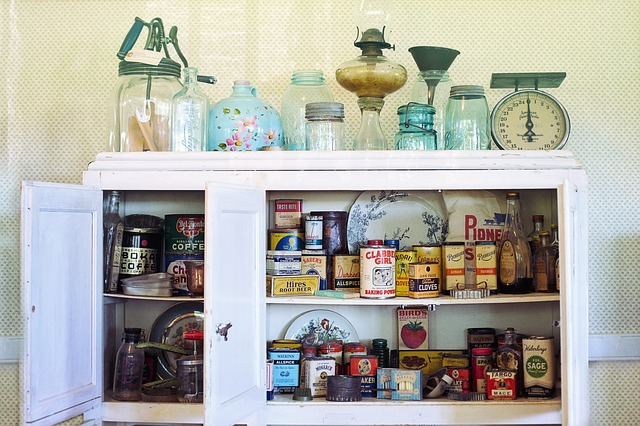
Arquivos podem ser vistos como alimentos prontos, semiprontos ou até crus, que são armazenados para serem usados num momento futuro, em outras receitas ou até na mesma, caso esta leve muito tempo para ficar pronta, por exemplo. A possibilidade deste armazenamento permite que receitas demoradas possam ser preparadas em partes, sem que nada estrague neste processo. Como vimos no capítulo anterior, geladeiras, armários e freezers são nossa memória secundária na cozinha. Nestas o que armazenamos são os alimentos que serão ingredientes das receitas ou partes de uma receita sendo preparada.
Ponteiros
Sabemos que num restaurante as mesas são identificadas numericamente de forma a facilitar a localização por parte dos garçons. A cada número é associada uma lista de pedidos ao longo do tempo toda vez que um cliente escolhe uma mesa e inicia seus pedidos. "Filé mignon mal passado na mesa 5", diz o garçom. O valor 5 passa ser a chave para todas as informações demandadas pelo cliente na mesa 5 num dado momento. Isso permite um controle preciso do que é consumido e a cobrança devida na saída do cliente.
Neste cenário, é fundamental que a lista de pedidos seja apagada após a saída de um cliente. Caso contrário, novos clientes serão cobrados de forma indevida.
Na programação, ponteiros são endereços (valores, números) de memória utilizados para referenciar áreas onde valores são armazenados. Tipicamente, estas áreas de memória são alocadas de forma dinâmica, ou seja, durante a execução do programa e numa quantidade previamente indeterminada. Essa indeterminação também vale para a quantidade de clientes que irão a um restaurante em algum dia. Esse mecanismo é útil porque permite, para programas que utilizem volumes grandes de informação de forma eventual, maior flexibilização na reserva de espaço em memória. Ou seja, o programador pode escolher o que é reservado estaticamente (alocação fixa, que perdura durante toda a execução do programa) e o que é reservado dinamicamente (alocação variável, onde não se sabe quando uma área de memória será reservada e que tamanho ela terá).
Em restaurantes, esse rearranjo é comum, por exemplo, quando o espaço de mesas é dividido em salões. Em dias menos movimentados, alguns salões ficam fechados para facilitar o trabalho dos garços, o que pode ser dinamicamente modificado caso a procura aumente num dado momento no dia. Também é comum que grupos desejem rearranjar mesas de forma que todos fiquem juntos. Para isso, basta que as identificações das mesas sejam temporariamente alteradas, ou seja, que as mesas 1, 2 e 3, num dado momento, sejam apenas a mesa 1. Esse rearranjo é muito natural em restaurantes, assim como na alocação de memória de computadores, pois são mecanismos manipulados de forma dinâmica.
Outro termo em Computação que frequentemente encontramos atrelado a ponteiros é a coleta automática de lixo. Imagine que moremos num país corrupto onde, eventualmente, clientes saem do restaurante sem pagar. Isso acarretará vários problemas, além do prejuízo do restaurante: 1) a mesa continuará ocupada até que se descubra que o cliente não se encontra mais no restaurante; 2) novos clientes podem ter que aguardar por uma eventual falsa lotação do restaurante.
Uma forma moderna de resolver o problema acima seria a adoção de um sistema automático de cobrança. Toda vez que um cliente entra num restaurante, seu cartão de crédito é atrelado a um número de mesa a partir daquele momento. Na porta de saída do restaurante, o cartão do cliente é reconhecido e são lançados os valores correspondentes aos seus pedidos, além da liberação da mesa para novos clientes. Ou seja, essa cobrança acontece de forma automática. Na Computação, esse "comportamento corrupto" é um pouco mais frequente, o que torna essa cobrança automática muito importante para o funcionamento correto do sistema.
Abstração
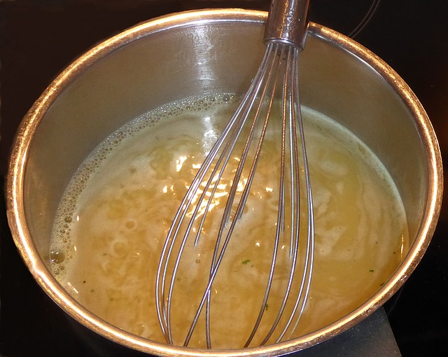
Na programação, fazemos uso da abstração quando utilizamos recursos simples para descrever cenários complexos. Na culinária, encontramos uso da abstração quando uma receita contém uma etapa descrita em apenas uma frase, mas que tomará vários passos para ser feita. Por exemplo, numa receita de pudim encontrei a seguinte etapa: "Com o açúcar prepare um caramelo claro". Esta etapa pode ser descrita como colocar o açúcar no fogo, misturá-lo sem parar até que fique com uma consistência pastosa. Ou seja, o cozinheiro que escreveu a receita abstraiu a complexidade da etapa a ser realizada. Este mecanismo é muito importante para tornar mais sucintas, porém igualmente expressivas, as receitas e os programas.
Exceções
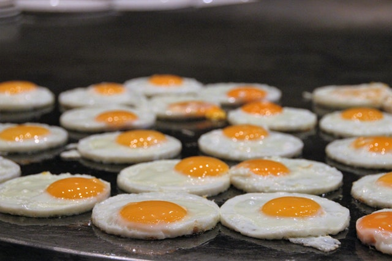
Na cozinha, é comum planejarmos alguma receita e, durante o preparo, algum passo causar um erro e inviabilizar a receita inicial. Esse erro pode ser causado por muitos fatores, como um forno desregulado, um ingrediente usado fora da validade por descuido, ou até uma distração que causa um cozimento ou fritura além do ideal. Numa cozinha industrial, este erro causará o descarte do preparo e uma nova preparação. Numa casa, usualmente tentamos resgatar o preparo fazendo um outro prato. Em ambas as situações, os chefes de cozinha podem, quando as chances de erro são grandes, planejar previamente pratos alternativos, como fazer um ovo mexido quando se deseja fazer um ovo com gema perfeita e ela se parte. Esta forma de se pensar em pratos alternativos, ou até no descarte completo do preparo, é chamada de tratamento de exceções na programação. Tanto na programação quanto na cozinha, no tratamento de uma exceção é necessário que a cozinha seja limpa e/ou rearrumada para que outros pratos possam ser preparados, reaproveitando ou não o preparo já feito.
Alô Mundo
Na programação, é comum o primeiro exemplo de uma linguagem apresentada ser o "Alô mundo!", o qual consiste na impressão desta mensagem na tela. Na nossa analogia, o exemplo básico será fritar um ovo. Neste preparo, a frigideira é uma variável, a qual receberá os ingredientes a serem processados. O ovo, o saleiro e a lata de óleo são os ingredientes, ou seja, os valores a serem manipulados pelo programa. Quando misturamos os ingredientes, iniciamos o preparo. Colocamos no fogo para que a fritura aconteça. Ao final, colocamos o ovo frito no prato para ser servido. Essas etapas podem ser visualizadas nos comentários do programa "Alô mundo!" escrito abaixo em C, uma linguagem antiga mas ainda viva, que podem estar rodando agora, por exemplo, no roteador wifi que você acessa.
// Localização dos utensílios na cozinha para o preparo do ovo frito
#include "string.h"
#include "stdio.h"
Uma cozinha pode ser utilizada para qualquer preparo. Como queremos fritar um ovo, devemos localizar e deixar disponível tudo que é necessário para este preparo. Neste passo de nossa receita, #include "string.h" disponibiliza uma frigideira adequada para se fritar um ovo, enquanto que #include "stdio.h" disponibiliza o prato para servirmos o nosso preparo.
// Local onde o preparo para fritar um ovo se inicia
main () {
Representa o Modo de Preparo nas receitas, ou seja, onde o preparo é iniciado.
char *msg = "Alô";
Neste passo da receita, pegamos nossa frigideira (variável msg) e colocamos o óleo (texto "Alô"), nosso primeiro ingrediente.
strcat (msg, " mundo");
Em seguida, adicionamos (função strcat) o ovo (texto " mundo") à frigideira.
strcat (msg, "!");
Agora adicionamos o sal (texto "!").
printf (msg);
}
Por fim, colocamos o ovo preparado (variável msg) no prato para ser servido. printf é operação que realiza a montagem do prato (impressão de uma palavra na tela). O programa acima, quando executado, exibe a seguinte mensagem clássica na tela, ou seja, o nosso ovo pronto:
Alô mundo!
Pode ser que alguns tenham achado muito complicado, extenso, imprimir uma singela mensagem na tela do computador. O código foi criado desta forma para tornar a analogia mais interessante. Abaixo segue um código mais sucinto que realiza a mesma tarefa:
#include "stdio.h"
main() {
printf ("Alô mundo!");
}
Algoritmo
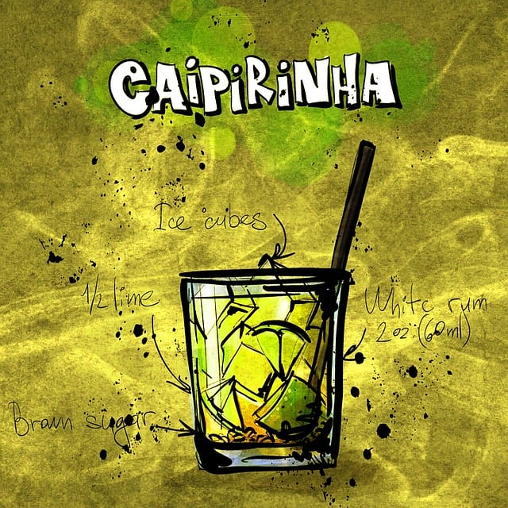
Como comentado na Introdução deste livro, a analogia para uma receita culinária é um programa de computador. Executar um programa de computador é análogo a preparar uma receita. Estas últimas ações só podem ser concluídas caso seus elementos principais, o programa e a receita, já estejam elaborados.
Uma receita é escrita num idioma específico, num leiaute específico, com unidade de medidas específica, assim como um programa é escrito numa linguagem de programação particular. Na elaboração de receitas e programas é comum criarmos um esboço da sequência de passos a serem seguidos, deixando de fora (abstraindo) detalhes muitos específicos dessas linguagens. Por exemplo, num esboço de receita, é aceitável uma receita precisar de 1/2 limão. Na receita a ser preparada é importante dar mais detalhes, como o espécie do limão (taiti, galego, ..) para o preparo de uma caipirinha, forma de espremer o limão, quantidade, etc.
Na programação de computadores não é diferente. O interessante é que há um nome específico para estes programas de computadores que não trazem muitos detalhes quanto a sua execução: algoritmo. Para o programa apresentado na seção Alô Mundo, o seu respectivo algoritmo poderia ser simplesmente:
Crie mensagem Alô mundo!
Exiba esta mensagem na tela
OU
Frite 1 ovo em óleo numa frigideira
Adicione sal a gosto
Observe que, no programa, não se sabe exatamente como a mensagem será criada, assim como exibida. Da mesma forma, não se sabe o tamanho do ovo, quanto de óleo deve ser utilizado e nem o quanto de sal. A quantidade de sal pode parecer óbvia para quem cozinha com frequência, mas certamente não é óbvia para quem está iniciando.
Outro ponto importante a se observar é que ambos os esboços de preparos acima possuem menos etapas. Isso é interessante, pois o papel desses esboços é resumir, dar uma idéia geral do que precisa ser feito. Esse exercício de partir de um esboço para se chegar numa especificação final nem de longe está restrito a programação e a preparação de receitas. Na construção de uma casa ou prédio, na criação de um carro, na elaboração de um livro, em todas estas atividades o exercício de se criar um esboço ajuda a se compreender, adaptar e evoluir algo que precisa ser concebido.
Ordenação
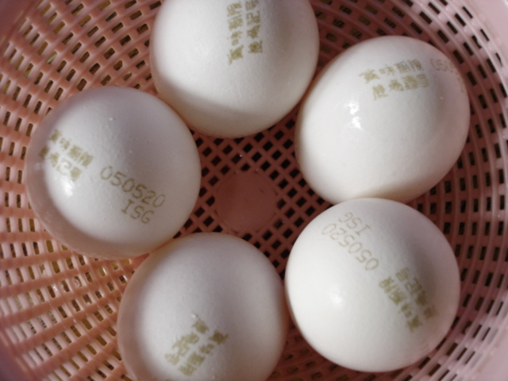
Algoritmos são um assunto frequente na Computação pois todo programa, em sua fase de concepção, é escrito como um algoritmo, ou seja, de forma geral, abstrata. E alguns desses algoritmos são tão comuns que acabam recebendo um nome.
Ordenação é um algoritmo clássico e necessário não apenas na programação ou na cozinha. Quando organizamos um guarda-roupas, por exemplo, é comum reservarmos espaços para itens similares como calças, camisas, meias e roupas íntimas. Alguns vão além e, dentro de cada item, organizam por cores. Toda essa organização ajuda na inserção de novos itens, assim como na busca por algum item desejado.
Na cozinha, uma situação onde a ordenação usualmente ocorre é na organização de dispensas. Produtos possuem prazo de validade e, para evitar desperdício, é interessante que consumamos primeiramente os produtos mais antigos, com menor tempo de validade. Apesar dessa analogia não estar associada ao preparo de um prato, suas restrições, como o tamanho de um porta ovos, torna fiel às características existentes na criação de um algoritmo de ordenação na Computação.
Uma analogia para ordenação numa receita pode ser descrita no preparo de um cozido de carne com legumes. Para este preparo, caso queiramos sentir a textura de todos os alimentos e não perdê-los dissolvidos durante o preparo, precisamos ordenar a forma com que vão para a panela. Iniciamos com os alimentos que levam mais tempo para serem cozidos e vamos adicionando os demais até chegarmos nos alimentos que cozinham muito rapidamente. Por exemplo, se queremos preparar um cozido com abóbora, batata, beterraba, cará, carne e tomate, a ordem a ser inserida na panela é: carne, beterraba, cará, batata e abóbora.
Conceitos Avançados
Neste capítulo veremos analogias de cozinhas com conceitos avançados de Computação. O entendimento destes conceitos usualmente requer tempo de estudo teórico e prático. Com isso, acredito que as analogias servem como uma forma fácil e rápida de se obter uma boa noção do conceito. Apesar disso, o autor recomenda fortemente que o leitor não se limite a noção básica, pois esta costuma ser esquecida tão rapidamente quanto foi obtida.
Paradigmas de Programação
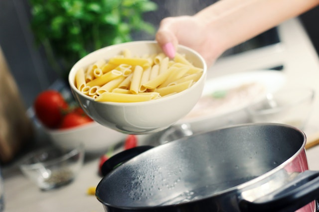
Paradigmas de programação são formas diferentes de se programar, mas que tem o mesmo objetivo, que é resolver algum problema, ou elaborar alguma receita. Nestas subseções (Programação Estruturada, Funcional, Lógica e Orientada a Objetos) veremos formas diferentes de se programar. Para tal, criaremos um programa em cada paradigma que simula a preparação de um macarrão instantâneo.
Programação Estruturada
Na programação estruturada, os programas são organizados em módulos (operações), os quais deveriam ter funções específicas e são acionados para o preparo do prato.
1. prato: Macarrao amarelo, 200gr
2. liquido: Agua, 500ml
3.
4. Cozinhar (Alimento, Tempo) {
5. // Operações para realizar o cozimento
6. }
7.
8. Preparo () {
9. Cozinhar (prato + liquido, 3min)
10. }
11.
12. Preparo ()
Neste programa, nas linhas 1 e 2 temos os valores (estruturas) que serão utilizados ao longo do programa. Nas linhas 4 e 8 temos o início de 2 módulos, os quais são chamados à partir da linha 12. O módulo Cozinhar, à partir da linha 4, recebe um Alimento a ser cozido e o Tempo de cozimento. Ou seja, olhando para a linha 4 sabemos o que é necessário para o funcionamento deste módulo. Em programação, o módulo é uma função e o que ele necessita são os seus parâmetros, que juntamente com o que este retorna constituem sua assinatura. Essa característica não acontece no módulo Preparo, o qual inicia na linha 8, o que torna implícito o que este módulo manipulará. Ou seja, fica a cargo do programador estruturar seus programas (receitas) da maneira mais legível possível.
Programação Funcional
Na programação funcional tudo é visto como função. Considere o preparo de um macarrão instantâneo. A água pode ser considerada uma função que, combinada em alguma quantidade com algum outro objeto, com um alimento, pode molhá-lo levemente, parcialmente ou inundá-lo. O macarrão pode ser ele próprio, ou seja, uma função identidade. Uma panela pode ser uma função que, dados quaisquer ingredientes, retorna um armazenamento para estes. A função fogo, quando recebe algo para ser aquecido e um intervalo de tempo, aquece este algo pelo tempo fornecido. Com isso, o programa para preparo de um macarrão pode ser dado da seguinte forma:
1. fogo(tempo, recipiente) -> recipiente {...}
2. panela(ingredientes) -> recipiente {...}
3. agua(quantidade) -> ingrediente {...}
4. macarrao(quantidade) -> ingrediente {...}
5. > fogo( 3min, panela( agua( 300ml ), macarrao( 200gr ) ))
Das linhas 1 à 4 temos as declarações das funções que são chamadas na linha 5. Essas funções são similares aos módulos da Programação Estruturada. Entretanto, na Programação Funcional, estas seguem algumas regras rigorosas: i) tudo que uma função necessita deve ser passado por parâmetro; ii) uma função sempre retorna algum valor, ou seja, sempre podemos pegar o resultado de uma função e passá-lo na chamada de outra. Por exemplo, a função fogo declarada na linha 1, recebe uma quantidade de tempo e um recipiente por parâmetro, e retorna um recipiente. Na linha 5, temos a chamada da função fogo, a qual recebe como parâmetro o tempo 3min e o resultado da chamada da função panela, que por sua vez recebe como parâmetros o resultado da chamada das funções agua e macarrão.
Programação Lógica
Esta forma de se programar caracteriza-se pela utilização da teoria de lógica para criação de programas. Iniciamos pela definição de fatos, ou seja, o que consideramos como verdade inicialmente. Após, criamos regras, as quais geram verdades à partir de fatos e/ou de outras regras. Esse conjunto de regras e fatos são chamados de nossa base de conhecimento. Por último, podemos realizar consultas sobre essa base para verificar se alguma informação é verdade. Para nossa analogia, temos :
1. Fatos:
2. Ingrediente (macarrao, 200gr)
3. Ingrediente (agua, 500ml)
4. Recipiente (panela, 1 litro)
5. Eletro (fogao, aquecer)
6.
7. Regras:
8. Se tivermos um ingrediente qualquer e agua e um eletro de aquecer entao podemos obter o ingrediente cozido
9.
10. Consulta:
11. Conseguimos obter macarrao instantaneo do programa acima?
Das linhas 1 à 5 temos a declaração de fatos a serem usados neste programa lógico. Por exemplo, na linha 2 declaramos que temos um macarrão de 200gr como um ingrediente. Na linha 8 temos uma regra, a qual gera novos fatos à partir da base. Neste caso, a regra geral indica que se temos algum ingrediente adicionado à agua e aquecido podemos cozinhá-lo. Na linha 11 temos a execução do programa lógico, o qual realiza uma consulta sobre os fatos e regras definidos. Neste caso, se conseguimos obter macarrão instantâneo do programa. Note que não tivemos a preocupação de especificar de forma rigorosa o programa, usando alguma sintaxe precisa e bem definida. O objetivo é apenas ilustrar ao leitor o formato geral de programas lógicos.
Programação Orientada a Objetos
A programação nesse paradigma se caracteriza pela identificação de classes e objetos num dado domínio. Seguindo a analogia, objetos são cada ingrediente ou recipiente que uma receita manipula. Por exemplo, macarrão parafuso, uma dada quantidade de água, uma panela específica, são objetos necessários para o preparo de um macarrão instantâneo. Classes, por sua vez, são os tipos de ingredientes ou recipientes que são utilizados em alguma receita. Neste caso, macarrão, água e panela, descritos de forma geral, representam as classes desses objetos. Ou seja, classes classificam um conjunto de objetos. Essa classificação envolve a descrição de características comuns como peso, cor, formato das massas de macarrão, e maneiras específicas para a manipulação desses objetos, como lavar e cozinhar os massas. Para o exemplo do macarrão instantâneo, temos:
1. Classe: Macarrao
2. Caracteristicas: cor, formato, peso
3. Operacoes: lavar, cozinhar
4.
5. Classe: Panela
6. Caracteristicas: capacidade, material
7. Operacoes: lavar, aquecer, adicionar ingrediente
8.
9. Classe: Agua
10. Caracteristicas: quantidade
11. Operacoes: molhar
12.
13. Objeto Macarrao instantaneo = Macarrao amarelo, formato trança, 200gr
14.
15. Objeto Cacarola = Panela 1 litro, teflon
16.
17. Objeto Porcao de agua = Agua 500 ml
18.
19. Cacarola.adicionar (Porcao de agua)
20. Cacarola.adicionar (Macarrao instantaneo)
21. Cacarola.aquecer (3min)
Nas linhas 1, 5 e 9 temos o início da declaração das classes Macarrão, Panela e Água, respectivamente. A classe Macarrão, por exemplo, possui como características a cor, o formato e o peso. Como operacões para manipulá-lo, temos a operação de lavar e a de cozinhar. Nas linhas 13, 15 e 17 temos a instanciação das classes definidas, ou seja, a criação de exemplos das classes. Observe que na criação de cada objeto são fornecidos dados específicos que correspondem às características da classe. Por exemplo, na linha 13, o objeto Macarrão instantâneo é criado com o tipo amarelo, formato de trança e com 200gr. Os outros objetos são criados de forma correspondente. Nas linhas 19, 20 e 21 os objetos são combinados para o preparo do macarrão. Na linha 19 a caçarola, que é um objeto do tipo panela, recebe uma porção de água. Na linha seguinte, a mesma caçarola recebe a porção de macarrão instantâneo. Finalmente, na linha 21 a caçarola é aquecida por 3 min.
Herança
Uma característica marcante deste paradigma é a possibilidade de reusar definições feitas anteriormente. Por exemplo, considere o fato de termos em nossa cozinha panelas de pressão. Uma panela de pressão, como sabemos, é uma panela com uma característica importante que é o fato do cozimento ser bem mais rápido, por causa da pressão gerada ao fechá-la. Em outros paradigmas, eventualmente teríamos que refazer muito da classe Panela, pois a panela de pressão não deixa de ser panela, possuindo capacidade, material, etc. Em OO, o esforço se restringirá a definir o que é específico da panela de pressão, reaproveitando muito do que foi definido para panela.
1. Classe: Panela de Pressão
2. Herda: Panela
3. Operacoes:
4. aquecer: Panela.aquecer / 3
Neste caso, a única coisa a se fazer é redefinir a operação aquecer (linha 4). Neste caso, indicamos que o tempo requerido para o aquecimento será 1/3 ("chute") do tempo de aquecimento de uma panela comum. Todas as outras características de Panela e suas operações são automaticamente herdadas quando sinalizamos a herança (linha 2).
Programação Orientada a Aspectos
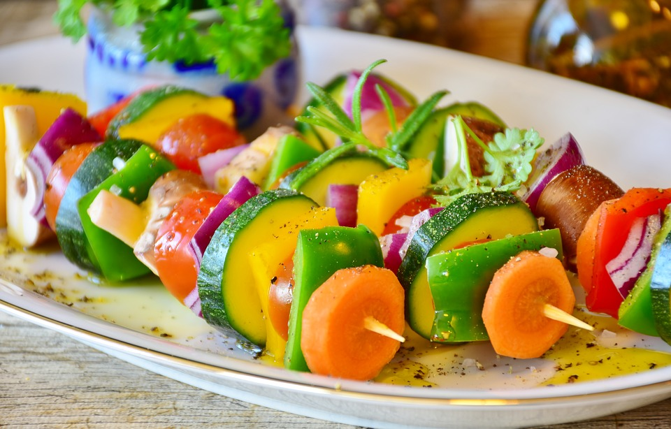
A programação orientada à aspectos é um estilo de programação não tão popular, mas que incorpora cenários bastante comuns em ambientes de programação. Ela lida com necessidades gerais de um programa, as quais não podem ser contempladas num único ponto no nosso código, mas sim precisam da atenção ao longo de todo o programa.
Na nossa analogia, um exemplo seria restringirmos as receitas a um dado número de calorias ou açúcares para pessoas diabéticas, ou restringir os preparos a pessoas veganas. Essas restrições fazem com que tenhamos que nos preocupar ao longo de toda a receita, e não apenas numa parte de um preparo, em atender a estas necessidades.
Padrões
Padrão é um termo que foi popularizado na Computação e se refere a sugestão de solução conhecida e testada para um problema recorrente. Um padrão contém as seguintes informações:
- Nome
- O problema recorrente
- A solução
- As consequências
A cozinha é recheada de padrões! 🙂 Por exemplo, imagine que, no preparo de um prato, há um molho pronto de alguma mistura de ingredientes e queremos usá-lo para dar um toque na receita. Se queremos um molho mais concentrado, com sabor intenso e cremoso, fazemos uma redução desse líquido, ou seja, cozinhamos em fogo baixo até a consistência desejada. Essa palavra redução é chave e abstrai toda uma sequência de passos necessários para se reduzir algum preparo. Selar, Grelhar, Preparar à Milanesa, Saltear, Flambar, Confitar, são alguns dos muitos padrões existentes na cozinha.
Programação Genérica

Na programação genérica, usualmente criamos operações de alto-nível, as quais podem ser aplicadas a diferentes tipos de valores. Exemplos típicos são coleções (pilhas, filas, ...). Por exemplo, podemos empilhar inúmeros tipos de valores (números, strings, pratos, carros, etc). A programação é genérica pois o funcionamento das operações para o tipo pilha independem dos tipos de valores manipulados. Sem utilizar exemplos óbvios como pilha de pratos, copos e panelas, podemos fazer uma analogia do comportamento genérico destes tipos com o preparo de uma vitamina. Nestas, há uma idéia geral de preparo, que consiste em se levar ao liquidificador um líquido (água, leite ou algum suco), eventualmente algo adocicado (açúcar ou mel), e as frutas, verduras e/ou legumes, das quais se deseja preparar a vitamina. Observe que o preparo geral independe de quais ingredientes serão utilizados, o que caracteriza o comportamento genérico.
APIs, Serviços e Microsserviços
Em restaurantes, pedidos de clientes são feitos após estes consultarem o cardápio do restaurante. Um cardápio indica que pratos podem ser preparados na cozinha daquele restaurante e os respectivos preços, ou seja, o que o cliente deverá fornecer (pagar) para ter aquele prato. Eventualmente, nos cardápios aparecem opções como o ponto de cozimento de uma carne (mal passada, ao ponto ou bem passada), a forma de adoçamento de um suco (sem açúcar, com açúcar ou adoçante), etc. Estas opções precisam ser indicadas pelo cliente. Ou seja, o restaurante é um provedor de serviços e o cliente é quem os utiliza. Com isso, o cardápio pode ser encarado como a API (Application Program Interface) do restaurante, o qual indica tudo que o restaurante oferece e o que precisa ser fornecido para que o serviço seja entregue.
Recentemente, fui num casamento onde se serviu um jantar. Neste, havia a parte das comidas, onde escolhíamos o que queríamos comer, e a parte das bebidas, com drinks maravilhosos também à nossa disposição. Ou seja, tínhamos 2 cardápios com opções para escolhermos, os quais compunham o mesmo jantar. Esta quebra do serviço desse pequeno restaurante em 2 menores resume a ideia de microsserviço em Computação. Esta quebra, em alguns contextos, facilita a organização, limpeza e até a substituição de algum dos serviços por outro que nos atenda melhor num dado momento.
Programação Concorrente
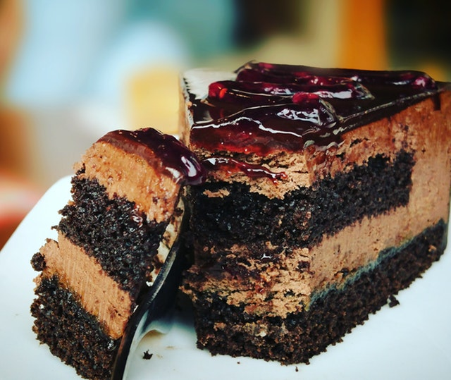
A programação concorrente permite que possamos identificar num programa trechos de códigos independentes, os quais poderiam executar em qualquer ordem. Isso permite, por exemplo, que consigamos executar o programa mais rapidamente processando estes trechos independentes simultaneamente. Essa aceleração costuma ser diminuída quando estes trechos precisam compartilhar algum recurso.
Na cozinha, um exemplo de concorrência acontece no preparo da massa, recheio e cobertura de um bolo. Como serão combinados em algum momento, é importante que sejam iniciados em momentos independentes para que não haja espera na combinação. Nesta situação, um retardo pode ocorrer quando diferentes partes do preparo compartilham um mesmo recurso, como uma batedeira. No momento em que uma parte do preparo precisa utilizar a batedeira, esta não pode estar sendo utilizada por outra parte. Nesta situação, a parte que necessitou por último deverá aguardar até a primeira terminar. Essa espera pode atrasar o momento em que as partes serão combinadas. No caso da batedeira, para evitar o risco de se misturar ingredientes de partes distintas, uma parte da receita precisa terminar por completo seu uso para que outra possa iniciar. Se o utensílio a ser compartilhado é uma faca elétrica, é possível que as partes da receita não precisem encerrar o uso deste utensílio por completo, ou seja, o uso pode ser trocado entre as partes ao longo do preparo. Outra possibilidade de compartilhamento ocorre quando as partes podem compartilhar recursos sem interrupção. Por exemplo, um relógio pode ser usado para controlar a realização de partes do preparo simultaneamente. Esta forma é mais interessante porque não impõe retardo em nenhuma das partes.
Programação em Rede
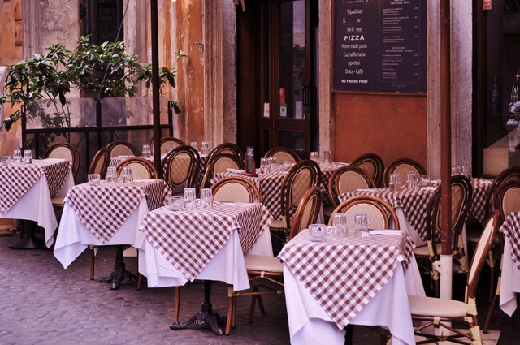
Cozinhas interligadas de alguma forma que podem depender uma da outra para o preparo de algum prato, seja fornecendo ingredientes ou partes de um preparo. Outro exemplo de programação em rede na cozinha aparece quando um restaurante possui uma cozinha para preparação dos pratos e um bar para preparação dos drinks. Ingredientes como frutas são compartilhadas entre estes setores, os quais precisam interagir para que não falte ingrediente ou parte de um preparo em ambos.
Programação na Nuvem
Suponha que você deseja organizar um jantar para 20 pessoas, mas sua cozinha não comporta o preparo de tantas receitas: há apenas panelas pequenas, não há utensílios suficientes, dentre outras restrições. Uma solução para este problema é contratar um serviço de buffet, o qual se encarrega de todo preparo e entrega do jantar. Excetuando questões de qualidade, para nós, clientes, pouco importa como e onde o prato foi feito. O fundamental é ter os pratos solicitados na hora e local que desejarmos. A cozinha do buffet, seus cozinheiros e toda a infraestrutura requerida, estão na chamada nuvem em Computação, um espaço abstrato do ponto de vista dos clientes. É importante observar que para o cliente, a vantagem do uso deste tipo de serviço é não ter que adquirir uma infraestrtura complexa para uma atividade eventual, como o jantar em questão.
Programação Móvel
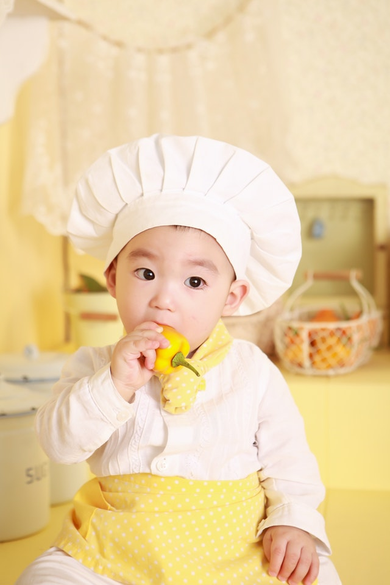
Programar para dispositivos móveis é como cozinhar para crianças. A essência é a mesma, mas com algumas restrições. Por exemplo, pratos infantis normalmente não levam álcool ou alimentos muito gordurosos no preparo. Os organismos das crianças, principalmente as bem pequenas, ainda estão em fase de crescimento e não conseguem digerir grandes quantidades de alimentos. Além disso, os pratos das crianças costumam ser decorados de forma a serem atraentes para o público alvo.
Para quem cozinha e precisa atender os 2 públicos (adulto e infantil, ou seja, desktop e móvel, respectivamente), essa distinção tende a atrapalhar, pois é mais fácil cozinhar um mesmo prato para 2 pessoas do que 2 pratos distintos. Isso se dá porque receitas diferentes usualmente requerem ingredientes diferentes, utensílios diferentes e ainda tem tempo de preparo diferenciado. Quanto a decoração dos pratos infantis, a analogia na programação móvel é a elaboração da interface, pois as telas são menores e os aplicativos precisam ter interfaces simples e intuitivas.
Programação Web
A programação para web pode ser associada a uma cozinha que funciona para serviço de entrega. Na programação web o cliente consome o prato fora do restaurante, como num serviço de entrega. Isso traz alguns bnefícios para o cliente, como o fato de poder consumir seu alimento onde quiser, bastando que este tenha um telefone para solicitá-lo. Na programação web, o que é essencial para um cliente é ter uma conexão a web e um navegador. Num restaurante convencional, o cliente deve se deslocar até este para fazer sua refeição. Na programação, isso é equivalente a instalar um software para poder utilizá-lo. Questões como ir de taxi, à pé, em transporte coletivo, se está chovendo no dia, trânsito, podem ser associadas às complicações de se instalar um software, como versão disponível para um Sistema Operacional específico, download do software, independente do seu tamanho, etc.
Em sistemas web, o cliente pode ter algumas facilidades como a associação do seu número de telefone com seu endereço. Isso faz com que este cliente não precise mais informar seu endereço nos próximos pedidos. Na programação, o servidor web, onde ficam armazenadas as aplicações web, registra informações dos clientes de forma a retornar dados mais personalizados. Na programação web, o termo que se refere ao local onde são armazenadas essas informações particulares se chama sessão. Na cozinha, apesar do registro dessas informações serem comuns, não há um nome de termo associado.
Virtualização
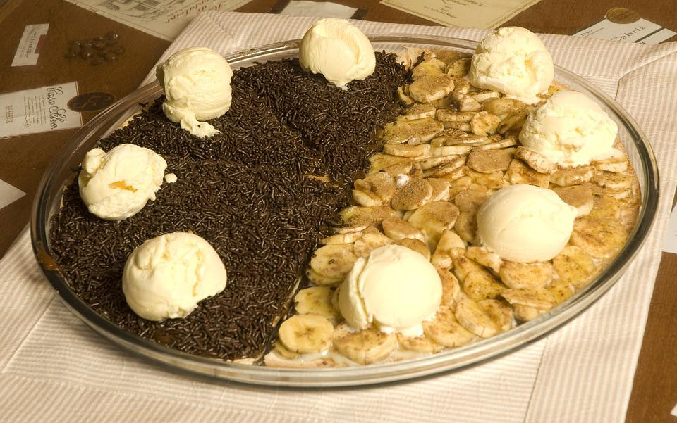
Imagine, por exemplo, que temos 2 tipos de negócio os quais precisam ser atendidos por uma mesma cozinha: sorveteria e pizzaria. Como os tipos de alimentos preparados são um tanto distintos, é natural que a cozinha requerida para estes tipos seja também distinta. Criar uma cozinha que contemple ambos de forma exclusiva aumentará o tamanho da cozinha e, por consequência, a complexidade e o custo em gerenciá-la (sistema operacional ou assistente do cozinheiro, na nossa analogia).
Considerando uma cozinha compartilhada, uma solução poderia ser empregar um assistente especial, o qual ficaria responsável por encaminhar as demandas de cada prato preparado para o assistente respectivo. Por exemplo, a palavra cobertura tem significado diferente para sorvetes e pizzas. A palavra cobertura para pizzas pode exigir inúmeros passos, enquanto que para sorvetes poderia ser apenas a localização de algo já pronto.
A vantagem de se ter virtualmente 2 (duas) cozinhas é a economia de recursos como espaço físico e utensílios. E o fato de já se ter experiência no compartilhamento facilita, por exemplo, a inclusão de uma nova cozinha virtual, como uma saladeria.
Plataformas de compras online de restaurantes também são um exemplo de virtualização. Ao invés de termos um aplicativo para cada restaurante, podemos acessar uma plataforma que integra ofertas de diferentes restaurantes. A plataforma funciona como o assistente especial, pois deverá direcionar os pedidos para cada restaurante específico. O restaurante economiza por não ter que construir e manter um aplicativo próprio e o cliente tem a tarefa de realizar um pedido facilitada com a concentração de ofertas, possibilidade de comparação, etc.
Contêineres
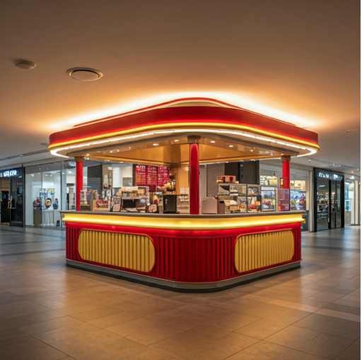
Nesta analogia, não tratamos da programação em si, mas de uma infraestrutura possível para que a programação possa acontecer ou, uma infraestrutura para que nossas comidas possam ser preparadas e consumidas. Para tal, consideraremos o contexto de franquias de negócio no formato de ilhas de produtos alimentícios em shoppings.
Uma ilha pode ser vista como um restaurante (cozinha mais área para se servir) compacto. Ser compacta permite que esta possa ser instalada, desinstalada e replicada com facilidade, diferente de um restaurante convencional.
Toda franquia, quando é contratada, define direitos e deveres de franqueados e franqueadores. No contexto de contêineres, esses contratos são especificações de contêineres, as quais descrevem como estes se constituirão. Como se trata de infraestrutura para a execução de programas, estas especificações definem como se constituem as máquinas necessárias para rodar nossos programas, ou seja, preparar nossas receitas.
E se sou um empreendedor em busca de oportunidades e gostaria de saber que franquias estão disponíveis hoje para serem contratadas? A Associação Brasileira de Franquias (ABF) possui um portal com uma lista de franquias disponíveis. No contexto de contêineres, o análogo seria um site como o Docker Hub, o qual é um repositório de especificação de contêineres para diversos propósitos.
Ao se contratar uma franquia, com o contrato assinado contendo a especificação da ilha, todo material necessário para a construção precisa ser comprado. Caso falte algum material, a ilha não conseguirá ser construída e, talvez, a especificação precise ser revista. Caso tudo esteja disponível, no contexto de contêineres, esse material pode ser visto como a imagem do contêiner.
Com o material, podemos partir para a construção da ilha. Em contêineres, essa construção é o momento onde a imagem de um contêiner é instanciada, ou seja, uma máquina é criada.
Após a construção da ilha, esta pode iniciar seu funcionamento de preparo e entrega de alimentos. Em contêineres, esse é o momento em que nossos programas executam na máquina que foi construída.
A gerência de uma única ilha é uma tarefa simples. Entretanto, no cenário de empresários que precisam gerenciar simultaneamente várias ilhas com tipos de produtos diferentes, a tarefa pode ser um tanto desafiadora. Uma solução que pode amenizar a tarefa do empresário é contratar um gerente especializado em gerenciar ilhas de produção de alimentos. No contexto de contêineres, esse gerente é um orquestrador de contêineres, o qual permite o controle de diversos contêineres de uma forma mais amigável. Com este pode-se disparar ou interromper todos ou uma parte desses contêineres, consultar seus status, criar relações de dependência, dentre outras possibilidades. Nas franquias, o gerente pode consultar a rentabilidade das ilhas, criar regras para indicar quando uma ilha específica precisa ser analisada ou até encerrada, é por aí vai.
Frameworks
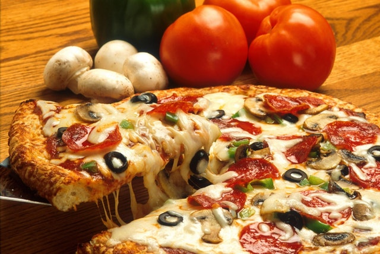
Frameworks podem ser encarados como alimentos semiprontos como uma pizza pré-cozida. A utilização destes alimentos, assim como dos frameworks, agiliza o processo de criação de receitas e implementação de sistemas. Numa pizza pré-cozida só temos que adicionar ingredientes, sem restrição, para personalizarmos esta pizza ao nosso gosto. Algumas já vem com alguns ingredientes, outras vem somente com a massa, mas todas já antecipam alguns passos do processo de preparo.
Quando não utilizamos frameworks, temos mais liberdade no preparo, como a criação de pizzas quadradas ou com massa de aipim (macaxeira, mandioca). Entretanto, teremos um trabalho maior, uma vez que não partiremos de algo já pronto. Ou seja, a escolha do uso ou não de um framework se baseia em identificar o que é mais prioritário: velocidade (uso) ou flexibilidade (não uso).
No desenvolvimento de sistemas ainda há um aspecto importante de ser observado. Usualmente utilizar um framework requer conhecer seus mecanismos, sua forma de operação. Esta etapa demanda certo tempo, o que pode variar em função da complexidade do framework. Dependendo do quão complexo é, a implementação sem o framework pode ser uma opção interessante e mais adequada. Fazendo analogia com a cozinha, nesta etapa temos que descobrir o supermercado que possui pizzas pré-cozidas, escolher dentre os fabricantes aquele que mais agrada (preço, ingredientes, valor calórico, confiança no fabricante, ...), pagar o valor cobrado pelo supermercado, ler as instruções de como prepará-la e preparar efetivamente.
Banco de Dados
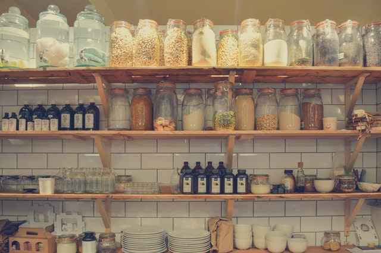
Um sistema de gerenciamento de banco de dados pode ser visto como um robô cuja função básica é guardar e recuperar ingredientes, ou partes de uma receita, para o preparo completo desta. Como as cozinhas tem distribuição de espaços diferentes, assim como suas mobílias, é necessário que este robô seja programado para trabalhar em um leiaute específico. Ou seja, um sistema de gerenciamento de banco de dados pode ser considerado uma ferramenta programada de suporte à execução de outros programas.
Um banco de dados, como ouvimos popularmente, é, tecnicamente falando, um conjunto de arquivos que armazena dados para algum fim. Como há um minisistema (robô) específico para manipular esses dados, estes podem estar em qualquer disposição que o robô compreenda. Os dados podem ser armazenados como outros ingredientes na cozinha, ou seja, dentro de armários/dispensas.
Desenvolvimento Ágil
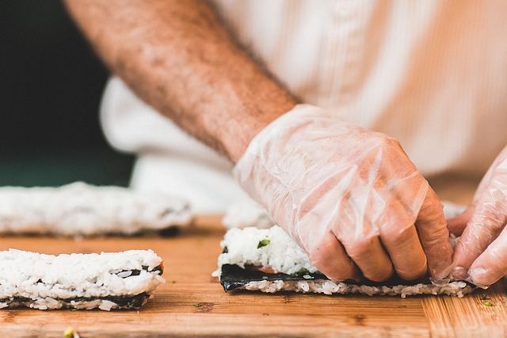
A Engenharia de Software é uma subárea da Computação responsável por criar métodos, processos e metodologias que visam a criação de softwares de qualidade e de forma eficiente. Formas diferentes de criar um software, suas implicações, a participação dos clientes, a divisão em etapas, dentre outras atividades, são decisões tomadas nesta área. Apesar da tarefa de criar um software ser muito mais complexa que a elaboração e preparo de uma receita, uma analogia provável é analisarmos os fundamentos que baseiam um curso de Culinária.
Fazendo analogia com o desenvolvimento de software tradicional, quando vamos a um restaurante, consultamos o cardápio para saber o que comeremos. Fazemos o pedido e, após um tempo, recebemos o prato preparado. Infelizmente, não é pouco frequente o prato não nos agradar, seja pelo ponto do cozimento de algum alimento, seja por conter algum ingrediente que não desejávamos e que não sabíamos que era utilizado. Nos restaurantes mais caros, é comum o prato ser refeito ao gosto cliente, e o restaurante absorve o prejuízo. Nos mais baratos, é comum os clientes comerem pouco do prato. Em ambas situações os clientes saem, no mínimo, desapontados com o serviço prestado.
No desenvolvimento ágil, a analogia pode ser feita aos restaurantes onde há maior interação entre cliente e cozinheiro. Por exemplo, imagine que os pratos são preparados na frente do cliente, o qual pode sugerir personalizações de forma a deixar o prato mais adequado ao seu gosto. Essa interação aumenta a chance de que o prato preparado agrade por completo o cliente, o que também diminui a chance do restaurante ter prejuízo com o preparo.
Heurística
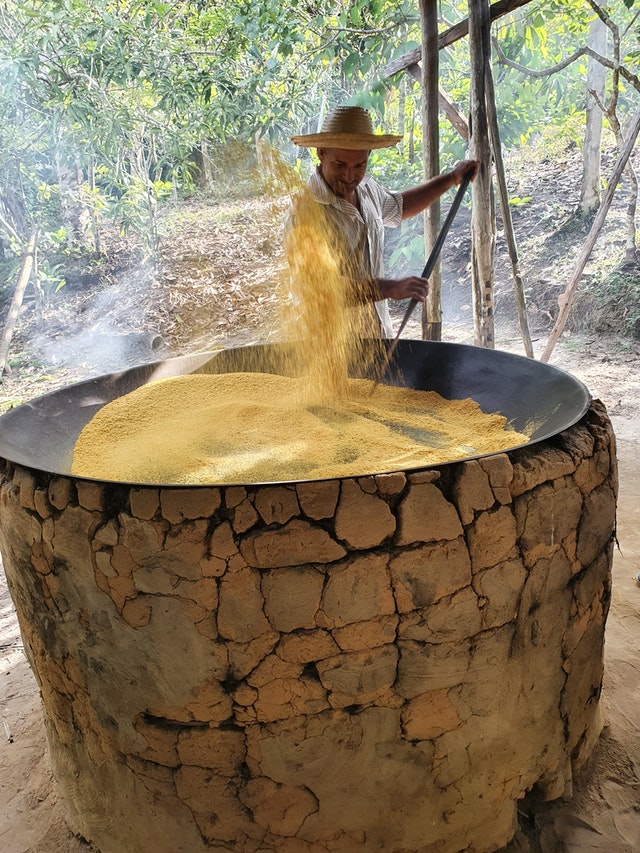
Heurísticas são técnicas de programação usadas para se resolver uma parte usualmente complexa de um problema específico. Estas técnicas normalmente são criadas a partir de muita experimentação na resolução destes cenários complexos.
Na cozinha, considere o cozimento do aipim (mandioca, macaxeira) para usá-lo em algum preparo, como um escondidinho ou uma pizza com massa de aipim. Como o aipim é uma raiz firme, seu cozimento (fervura em água) leva tempo. Esse tempo precisa ser considerado no preparo de qualquer receita que o utilize. Quanto mais rápido o cozinhamos, mais rapidamente podemos utilizá-lo para continuar o restante da receita.
Na busca por esta rapidez, várias técnicas são utilizadas. A mais direta e eficiente é cozinhar o aipim numa panela de pressão. Entretanto, quando se quer pouca quantidade de aipim e a panela existente é muito grande, quando não se tem uma panela de pressão, ou por qualquer outro impedimento, a panela de pressão pode não ser uma opção. Daí, podemos utilizar uma panela comum com água. Com alguma experimentação e intuição, percebemos que cozinhar com a panela fechada acelera o processo, pois a temperatura dentro da panela ficará maior. Outra dica que já encontrei é não colocar sal no início do aquecimento da panela, pois o sal retarda a fervura da água. Cozinhar pedaços menores facilita a quebra das fibras que amolecem a raiz. Caso a raiz demore a amolecer, jogar água fria para reiniciar o cozimento (choque térmico) ajuda a amolecer o aipim. Para concluir as dicas, assim que o cozimento alcança os 100 graus, ou seja, quando a água começar a ferver, sua temperatura não eleva mais e fogo pode ser baixado. Do contrário, a água evaporaria muito rapidamente. Com isso, o cozimento continuará e economizará energia.
Todas estas dicas, e outras que podem ser descobertas, podem ser encaradas como heurísticas voltadas para o cozimento mais rápido e eficiente de um aipim. Heurísticas em Computação não estão atreladas apenas a velocidade. Problemas de organização de espaço (como nas dispensas, bancadas e armários), melhor ordenação de tarefas (ordenação das etapas de preparo de uma receita), dentre outros, podem ser cruciais e determinar a viabilidade de um sistema. O mesmo vale na cozinha. Um restaurante, por exemplo, precisa realizar preparos prévios para oferecer um prato que leva 8h para ser preparado. Maniçoba, uma espécie de feijoada sem feijão, prato típico paraense feito da folha da mandioca, leva 7 dias para ser preparado.
Na Computação também encontramos o termo metaheurística, que se trata da ideia abstrata por trás da heurística. Nesta nossa analogia, una metaheurística seria a generalização das técnicas de aceleração de cozimento aplicadas a qualquer alimento, como batatas, cenouras e por aí vai.
Para concluir, a imagem que utilizei é um forno para o preparo da farinha de mandioca. Estes são comumente encontrados nas casas de farinha existentes no interior das cidades, sendo mais frequentes nos estados do nordeste.
Sistemas de Recomendação
Hoje em dia, sempre que entramos em algum serviço online para consumo de informação, como redes sociais e serviços de streaming (filmes, músicas, etc), recebemos um monte de recomendações do que devemos dar atenção. Estas recomendações são criadas por algoritmos a partir de informações diversas, como conteúdos consumidos por perfis similares ao do usuário, conteúdos mais acessados numa dada região e conteúdos patrocinados.
Em nosso livro, uma analogia interessante ocorre em restaurantes na divulgação dos chamados "Prato do Dia". Para quem já parou para pensar a respeito, já deve ter concluído que o perfil do usuário não é muito levado em consideração na construção do prato do dia. Isto porque o restaurante precisaria ter um histórico prévio grande da preferência dos seus potenciais clientes para, em função disso, tentar deduzir o que o cliente, ou a maioria deles, deseja comer numa dado dia. O mais comum na construção dessas recomendações deve ser uma combinação de oferta em excesso dos ingredientes básicos para um preparo combinado com os pratos típicos preparados nesse restaurante.
Em ambos os cenários (restaurantes e serviços online) percebemos com essas recomendações uma possibilidade de se induzir o público para o que os detentores do serviço entendem que deveria ser consumido. Se a gente pensa em pratos com uma distribuição equilibrada entre proteínas e carboidratos, por exemplo, estamos induzindo a uma alimentação mais saudável. Entretanto, nada impede que exatamente o contrário possa ser induzido. Imaginemos o quão desinteressante é para uma indústria do gênero alimentício se restaurantes passassem a não recomendar seus produtos? Essa é a grande questão ética e de impacto relacionada a sistemas de recomendação.
IA's Generativas
IA's Generativas são programas que funcionam como oráculos, recebendo uma pergunta como entrada (prompt) e retornando a resposta a esta pergunta. A popularização dessas ferramentas se deu por diversas razões, como sua abrangência de conteúdos, qualidade das respostas, velocidade de processamento, possibilidade de entradas e respostas que não sejam apenas texto (imagem, documentos pdfs, ...), e por aí vai.
De forma simplificada, estas ferramentas utilizaram conteúdo disponível na internet como base de conhecimento e a construção de uma resposta é feita de forma estatística, analisando, para cada palavra, o que ocorre em seguida a esta com mais frequência.
Na cozinha, o preparo de uma receita por robôs já não é uma grande novidade em alguns lugares do mundo. Entretanto, a elaboração da receita já se torna um pouco mais desafiadora. Na verdade, para a analogia ficar mais fidedigna, o cliente não sabe exatamente o que deseja pedir. Ele pode pedir: "Gostaria que preparasse uma carne bem macia com algum tempero que leve mostarda. Adicione acompanhamentos em quantidade adequada para 2 pessoas que estão tentando fazer dieta.".
Observe que, num restaurante, a escolha de um cardápio está atrelada a uma receita específica, com tipos e quantidades de ingredientes, forma de preparo, etc. No pedido acima, tudo é bem vago. E como uma cozinha turbinada com IA funcionaria?
Primeiro, é importante observar que esta IA foi alimentada com muitas receitas (retiradas da internet, por exemplo). Como o processo é estatístico, pode-se primeiro extrair o conjunto de receitas de carne do conjunto geral de receitas. Como essas IA's são para uso geral, pode-se buscar da base também o tipo de carne que frequentemente aparece junto de carne macia. Daí, também busca-se diferentes molhos que usam mostarda e extrai-se o que é mais comum. E assim sucessivamente até que a receita esteja pronta e possa ser preparada. Vale frisar que, em função do processo ser essencialmente estatístico, estas IA's não conhecem a essência de nada. Pedir informações sobre carnes, carros ou livros trazem o mesmo tipo de dificuldade e essas ferramentas só os distinguem pois estes ocorrem em cenários bem distintos.
Agradecimentos
Nesta seção pretendo agradecer a todas as pessoas que, de uma maneira ou de outra, contribuíram para este trabalho.
Para iniciar, minha eterna crítica, colaboradora, revisora e companheira Patricia Garcês Rabelo. Se meu mundo não seria o mesmo sem sua companhia, imagine este livro! ;)
Ao meu primo Adilson Bazilio Ferreira por ter feito o primeiro comentário comprovando que leu o livro (ao menos a Introdução). Seu comentário foi: "Boa primo! Eu, como SO, funciono bem rsrsrs !!!" :D
Ao colaborador Stevemberg Carvalho de Oliveira por ter sugerido uma interpretação mais adequada para a analogia do comando de atribuição. Procurei adaptá-la para a analogia já existente e achei que ficou mais interessante.
Ao aluno e amigo Peter Clayder, por ter se apropriado tão bem da analogia de frameworks, a ponto de me fazer elaborar melhor a abordagem inicial.
Ao aluno Wagner Martins, por ter sugerido uma nova e melhor versão para analogia de ponteiros, pois a anterior quase não estava a altura de ser chamada de analogia. :)
E vou ficar torcendo aqui para que mais sugestões sejam recebidas e esta seção fique bem grande! ;)